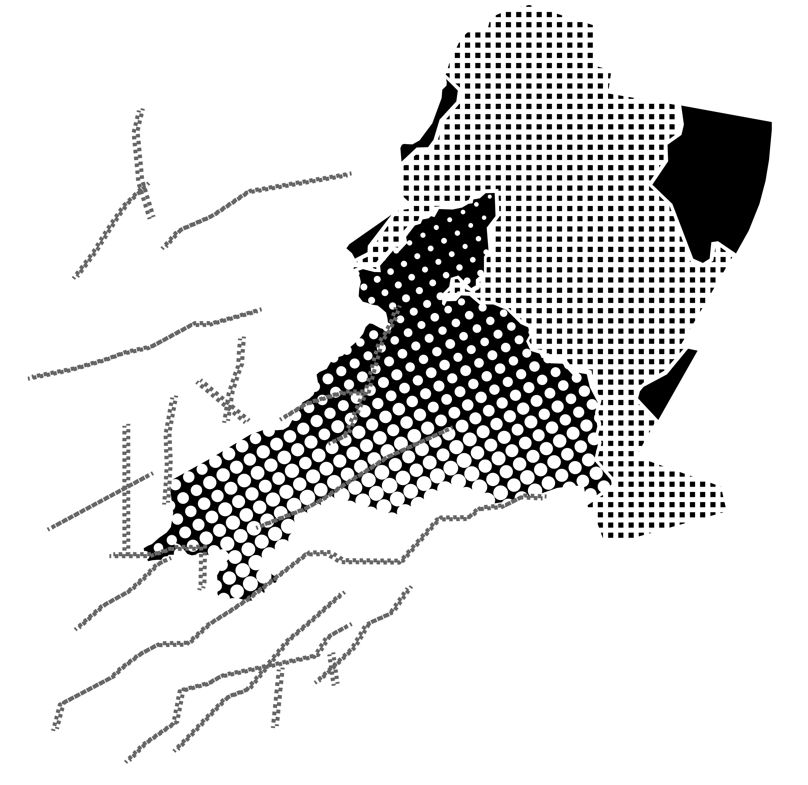

CAPA
GEOLÓGICA


EL SUBSUELO
El subsuelo de la Miguel Hidalgo está conformado por una mezcla compleja de materiales: depósitos lacustres blandos y altamente compresibles, sedimentos aluviales más consolidados, zonas de roca ígnea fracturada y fallas geológicas activas. Esta diversidad geológica condiciona el comportamiento del terreno ante la extracción de agua subterránea, aumentando la vulnerabilidad estructural y acelerando los procesos de hundimiento diferencial.
PARQUE BICENTENARIO
19°28′11″N 99°11′49″O / 19.469722222222, -99.196944444444
ESCUELA SUPERIOR DE ECONOMÍA
19°27′18″N 99°10′04″O / 19.455, -99.16777778.
UNIVERSIDAD DEL EJÉRCITO Y LA FUERZA
19.449861, -99.171738
AUDITORIO NACIONAL
19°25′29″N 99°11′42″O / 19.424722, -99.194917